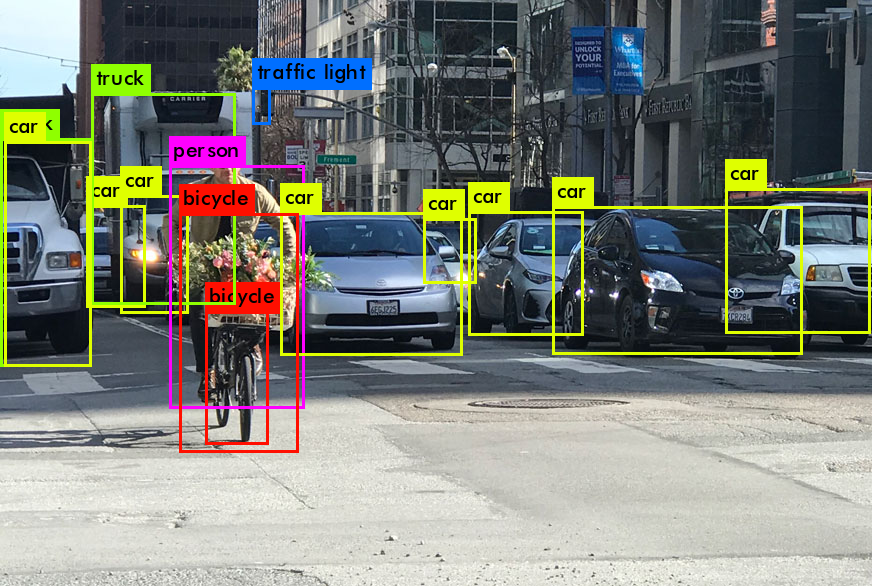
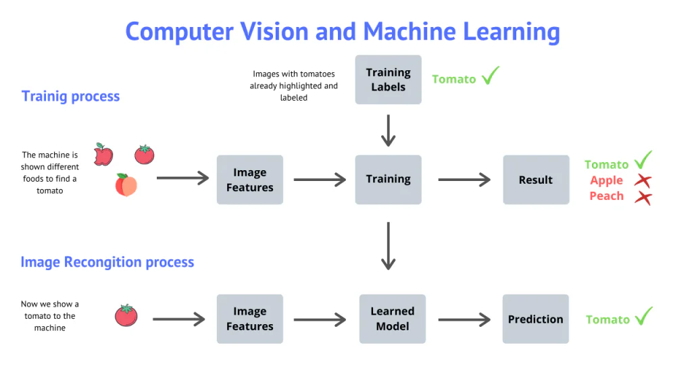
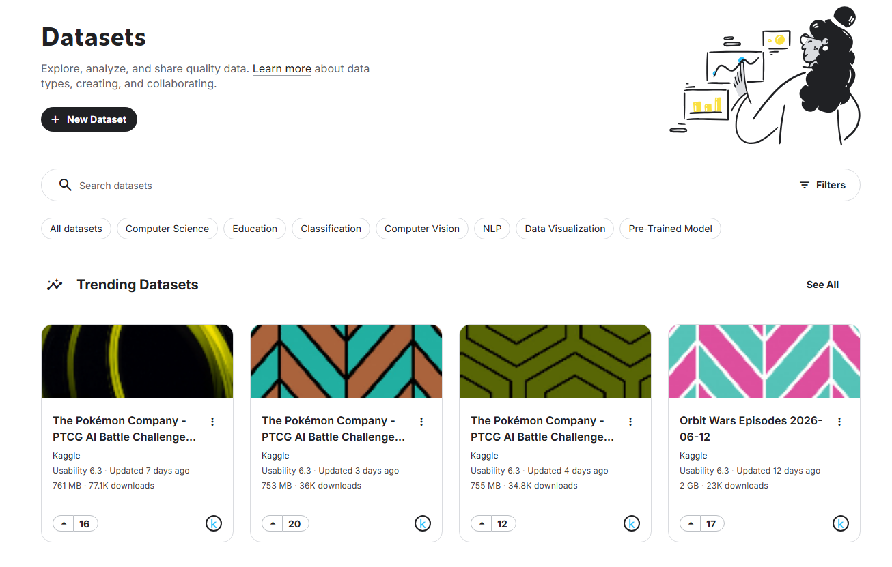

Capture classroom images and run object detection without labeling or training
Use these files during the workshop.
They include Raspberry Pi capture commands, Raspberry Pi YOLOv4-tiny pretrained detection code, PC/Colab YOLOv8 pretrained detection code, and a Colab notebook.
No labeling is needed today. We use pretrained YOLO models that already know common object categories.
Download all workshop coderpicam-helloPretrained model: a model that was already trained on a large dataset before class.
Today, we use COCO-style object categories such as person, bottle, cup, chair, book, laptop, keyboard, and cell phone.
Important: if an object is not part of the pretrained class list, the model may ignore it or call it something similar.

# On Raspberry Pi Zero 2 W
rpicam-hello -t 5000What this does: opens a short camera preview so we know the camera cable, OS camera stack, and sensor are working.
Legacy OS fallback: if rpicam-hello is not available, try libcamera-hello -t 5000.
mkdir -p ~/aifs_classroom_yolo/images
# Capture one classroom image
rpicam-still -o ~/aifs_classroom_yolo/images/classroom_001.jpg \
--width 1280 --height 720 --timeout 1000 --nopreview
# Optional: capture 20 images
for i in $(seq -w 1 20); do
rpicam-still -o ~/aifs_classroom_yolo/images/classroom_${i}.jpg \
--width 1280 --height 720 --timeout 1000 --nopreview
sleep 2
doneGood demo objects: bottle, cup, chair, book, laptop, keyboard, backpack, cell phone, or person.
Why YOLOv4-tiny on the Pi? Raspberry Pi Zero 2 W is small and slow compared with a laptop GPU. YOLOv4-tiny is lighter than full YOLO models and can run single-image detection using OpenCV DNN.
No training. No labels. We download pretrained COCO weights and run inference locally on the Raspberry Pi.
sudo apt update
sudo apt install -y python3-opencv python3-numpy wget
cd ~/aifs_day3_yolo_workshop_pretrained/rpi_pretrained_yolov4_tiny
bash download_yolov4_tiny_assets.shdownload_yolov4_tiny_assets.sh on a laptop, then copy the models/ folder to the Raspberry Pi.
cd ~/aifs_day3_yolo_workshop_pretrained/rpi_pretrained_yolov4_tiny
python3 detect_yolov4_tiny_rpi.py \
--image ~/aifs_classroom_yolo/images/classroom_001.jpg \
--output yolo_results/classroom_001_detected.jpg \
--conf 0.25from ultralytics import YOLO
model = YOLO("yolov8n.pt") # pretrained model
results = model.predict(
source="classroom_001.jpg",
conf=0.25,
imgsz=640,
save=True
)Why also use a PC or Colab? It is faster and easier for visualization. Ultralytics automatically downloads the pretrained model the first time you run it.
This version also uses pretrained classes, so students still do not need labels.
Training a custom detector is a different workflow.
To detect new categories that the pretrained model does not know, we would need many images, bounding-box labels, a train/validation split, and a training computer.
For this short workshop, we skip custom training so students can finish the full camera-to-detection pipeline quickly.

□ Camera preview works with rpicam-hello
□ One classroom image is captured with rpicam-still
□ Pretrained YOLOv4-tiny assets are downloaded or copied to the Raspberry Pi
□ Raspberry Pi local detection saves an annotated image
□ The same image is tested on PC / Colab using pretrained YOLOv8
□ Students understand the difference between pretrained inference and custom training
Kaggle is a good place to explore real datasets.
Students who want to keep practicing can search for object detection, plant images, traffic signs, animals, medical images, satellite images, and many other datasets.
https://www.kaggle.com/datasets
Reminder: always check the dataset license and citation requirements before using data in a project.

Raspberry Pi camera software documentation: rpicam-hello and rpicam-still.
Ultralytics YOLO documentation: pretrained model loading and prediction.
YOLOv4 / YOLOv4-tiny Darknet resources and pretrained COCO weights.
Kaggle Datasets for students who want to explore real datasets after the workshop.